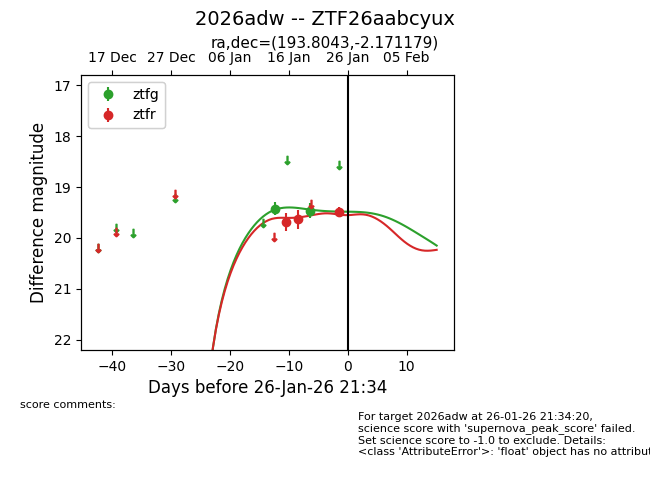
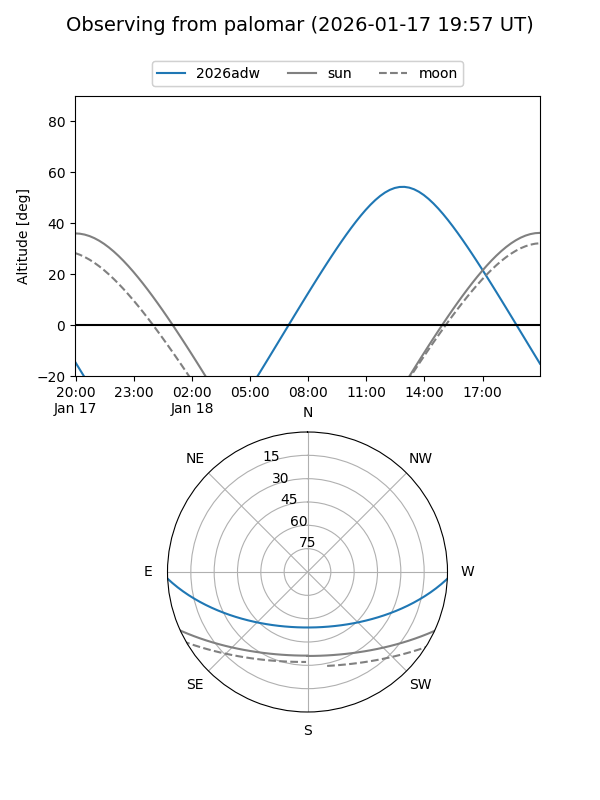
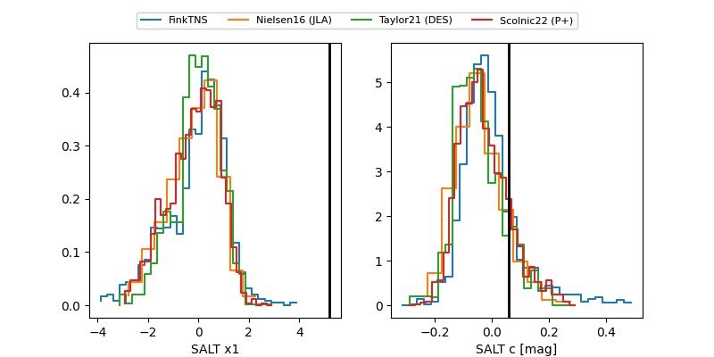

2026adw
Target 2026adw at 2026-01-20 21:21
Aliases and brokers:
FINK: link
Lasair: link
ALeRCE: link
TNS: link
YSE: link
alt names
ZTF26aabcyux (ztf,fink_ztf)
2026adw (tns,yse)
Coordinates:
equatorial (ra, dec) = 193.8043,-2.17118
equatorial (HMS+DMS) = 12:55:13.04,-02:10:16.24
galactic (l, b) = (304.8607,+60.68641)
Flags:
Photometry:
last ztfg=19.47, ztfr=19.63
2 ztfg, 2 ztfr detections
Lightcurve

Visibility


Additional plots
